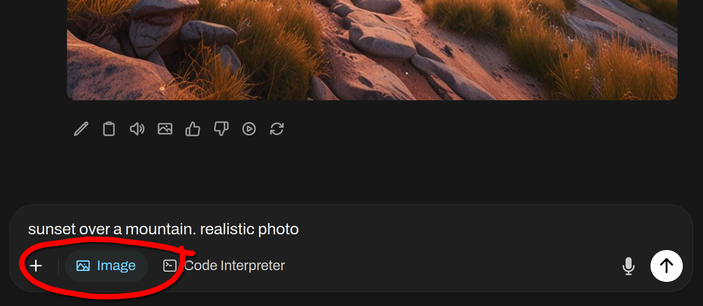
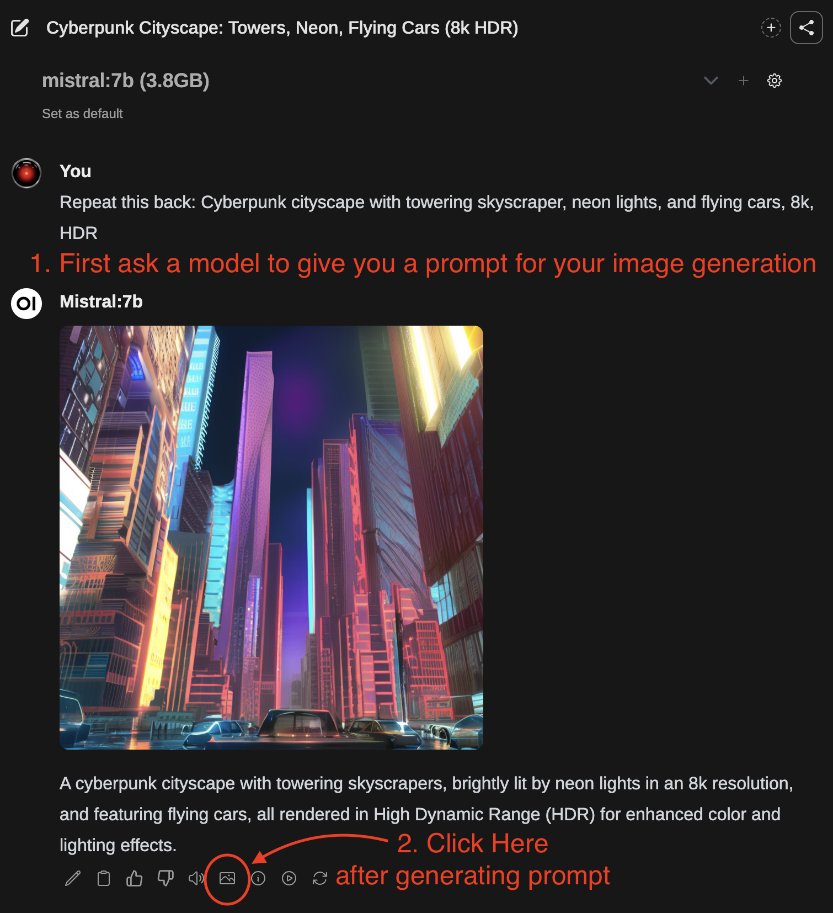

This tutorial is a community contribution and is not supported by the Open WebUI team. It serves only as a demonstration on how to customize Open WebUI for your specific use case. Want to contribute? Check out the contributing tutorial.
🎨 Image Generation
Open WebUI supports image generation through three backends: AUTOMATIC1111, ComfyUI, and OpenAI DALL·E. This guide will help you set up and use either of these options.
AUTOMATIC1111
Open WebUI supports image generation through the AUTOMATIC1111 API. Here are the steps to get started:
Initial Setup
-
Ensure that you have AUTOMATIC1111 installed.
-
Launch AUTOMATIC1111 with additional flags to enable API access:
./webui.sh --api --listen -
For Docker installation of WebUI with the environment variables preset, use the following command:
docker run -d -p 3000:8080 --add-host=host.docker.internal:host-gateway -e AUTOMATIC1111_BASE_URL=http://host.docker.internal:7860/ -e ENABLE_IMAGE_GENERATION=True -v open-webui:/app/backend/data --name open-webui --restart always ghcr.io/open-webui/open-webui:main
Setting Up Open WebUI with AUTOMATIC1111
-
In Open WebUI, navigate to the Admin Panel > Settings > Images menu.
-
Set the
Image Generation Enginefield toDefault (Automatic1111). -
In the API URL field, enter the address where AUTOMATIC1111's API is accessible:
http://<your_automatic1111_address>:7860/If you're running a Docker installation of Open WebUI and AUTOMATIC1111 on the same host, use
http://host.docker.internal:7860/as your address.
ComfyUI
ComfyUI provides an alternative interface for managing and interacting with image generation models. Learn more or download it from its GitHub page. Below are the setup instructions to get ComfyUI running alongside your other tools.
Initial Setup
-
Download and extract the ComfyUI software package from GitHub to your desired directory.
-
To start ComfyUI, run the following command:
python main.pyFor systems with low VRAM, launch ComfyUI with additional flags to reduce memory usage:
python main.py --lowvram -
For Docker installation of WebUI with the environment variables preset, use the following command:
docker run -d -p 3000:8080 --add-host=host.docker.internal:host-gateway -e COMFYUI_BASE_URL=http://host.docker.internal:7860/ -e ENABLE_IMAGE_GENERATION=True -v open-webui:/app/backend/data --name open-webui --restart always ghcr.io/open-webui/open-webui:main
Setting Up Open WebUI with ComfyUI
Setting Up FLUX.1 Models
- Model Checkpoints:
- Download either the
FLUX.1-schnellorFLUX.1-devmodel from the black-forest-labs HuggingFace page. - Place the model checkpoint(s) in both the
models/checkpointsandmodels/unetdirectories of ComfyUI. Alternatively, you can create a symbolic link betweenmodels/checkpointsandmodels/unetto ensure both directories contain the same model checkpoints.
- VAE Model:
- Download
ae.safetensorsVAE from here. - Place it in the
models/vaeComfyUI directory.
- CLIP Model:
- Download
clip_l.safetensorsfrom here. - Place it in the
models/clipComfyUI directory.
- T5XXL Model:
- Download either the
t5xxl_fp16.safetensorsort5xxl_fp8_e4m3fn.safetensorsmodel from here. - Place it in the
models/clipComfyUI directory.
To integrate ComfyUI into Open WebUI, follow these steps:
Step 1: Configure Open WebUI Settings
- Navigate to the Admin Panel in Open WebUI.
- Click on Settings and then select the Images tab.
- In the
Image Generation Enginefield, chooseComfyUI. - In the API URL field, enter the address where ComfyUI's API is accessible, following this format:
http://<your_comfyui_address>:8188/.- Set the environment variable
COMFYUI_BASE_URLto this address to ensure it persists within the WebUI.
- Set the environment variable
Step 2: Verify the Connection and Enable Image Generation
- Ensure ComfyUI is running and that you've successfully verified the connection to Open WebUI. You won't be able to proceed without a successful connection.
- Once the connection is verified, toggle on Image Generation (Experimental). More options will be presented to you.
- Continue to step 3 for the final configuration steps.
Step 3: Configure ComfyUI Settings and Import Workflow
- Enable developer mode within ComfyUI. To do this, look for the gear icon above the Queue Prompt button within ComfyUI and enable the
Dev Modetoggle. - Export the desired workflow from ComfyUI in
API formatusing theSave (API Format)button. The file will be downloaded asworkflow_api.jsonif done correctly. - Return to Open WebUI and click the Click here to upload a workflow.json file button.
- Select the
workflow_api.jsonfile to import the exported workflow from ComfyUI into Open WebUI. - After importing the workflow, you must map the
ComfyUI Workflow Nodesaccording to the imported workflow node IDs. - Set
Set Default Modelto the name of the model file being used, such asflux1-dev.safetensors
You may need to adjust an Input Key or two within Open WebUI's ComfyUI Workflow Nodes section to match a node within your workflow.
For example, seed may need to be renamed to noise_seed to match a node ID within your imported workflow.
Some workflows, such as ones that use any of the Flux models, may utilize multiple nodes IDs that is necessary to fill in for their node entry fields within Open WebUI. If a node entry field requires multiple IDs, the node IDs should be comma separated (e.g., 1 or 1, 2).
- Click
Saveto apply the settings and enjoy image generation with ComfyUI integrated into Open WebUI!
After completing these steps, your ComfyUI setup should be integrated with Open WebUI, and you can use the Flux.1 models for image generation.
Configuring with SwarmUI
SwarmUI utilizes ComfyUI as its backend. In order to get Open WebUI to work with SwarmUI you will have to append ComfyBackendDirect to the ComfyUI Base URL. Additionally, you will want to setup SwarmUI with LAN access. After aforementioned adjustments, setting up SwarmUI to work with Open WebUI will be the same as Step one: Configure Open WebUI Settings as outlined above.
SwarmUI API URL
The address you will input as the ComfyUI Base URL will look like: http://<your_swarmui_address>:7801/ComfyBackendDirect
OpenAI
Open WebUI also supports image generation through the OpenAI APIs. This option includes a selector for choosing between DALL·E 2, DALL·E 3, and GPT-Image-1 each supporting different image sizes.
Initial Setup
- Obtain an API key from OpenAI.
Configuring Open WebUI
- In Open WebUI, navigate to the Admin Panel > Settings > Images menu.
- Set the
Image Generation Enginefield toOpen AI. - Enter your OpenAI API key.
- Choose the model you wish to use. Note that image size options will depend on the selected model:
- DALL·E 2: Supports
256x256,512x512, or1024x1024images. - DALL·E 3: Supports
1024x1024,1792x1024, or1024x1792images. - GPT-Image-1: Supports
auto,1024x1024,1536x1024, or1024x1536images.
- DALL·E 2: Supports
Azure OpenAI
Image generation with Azure OpenAI Dall-E or GPT-Image is supported with Open WebUI. Configure the Image Generation as follows:
- In Open WebUI, navigate to the Admin Panel > Settings > Images menu.
- Set the
Image Generation Enginefield toOpen AI(Azure OpenAI uses the same syntax as OpenAI). - Change the API endpoint URL to
https://<instance-id>.cognitiveservices.azure.com/openai/deployments/<model>/. Set the instance and model id as you find it in the settings of the Azure AI Foundry. - Configure the API version to the value you find in the settings of the Azure AI Fountry.
- Enter your Azure OpenAI API key.
Alternative API endpoint URL tutorial: https://<endpoint name>.openai.azure.com/openai/deployments/<model name>/ - you can find your endpoint name on https://ai.azure.com/resource/overview, and model name on https://ai.azure.com/resource/deployments.
You can also copy Target URI from your deployment detailed page, but remember to delete strings after model name.
For example, if your Target URI is https://test.openai.azure.com/openai/deployments/gpt-image-1/images/generations?api-version=2025-04-01-preview, the API endpoint URL in Open WebUI should be https://test.openai.azure.com/openai/deployments/gpt-image-1/.
LiteLLM Proxy with OpenAI Endpoints
Image generation with a LiteLLM proxy using OpenAI endpoints is supported with Open WebUI. Configure the Image Generation as follows:
- In Open WebUI, navigate to the Admin Panel > Settings > Images menu.
- Set the
Image Generation Enginefield toOpen AI. - Change the API endpoint URL to
https://<your-litellm-url>:<port>/v1. - Enter your LiteLLM API key.
- The API version can be left blank.
- Enter the image model name as it appears in your LiteLLM configuration.
- Set the image size to one of the available sizes for the selected model.
To find your LiteLLM connection information, navigate to the Admin Panel > Settings > Connections menu. Your connection information will be listed under the OpenAI API connection.
Image Router
Open WebUI also supports image generation through the Image Router APIs. Image Router is an open source image generation proxy that unifies most popular models into a single API.
Initial Setup
- Obtain an API key from Image Router.
Configuring Open WebUI
- In Open WebUI, navigate to the Admin Panel > Settings > Images menu.
- Set the
Image Generation Enginefield toOpen AI(Image Router uses the same syntax as OpenAI). - Change the API endpoint URL to
https://api.imagerouter.io/v1/openai - Enter your Image Router API key.
- Enter the model you wish to use. Do not use the dropdown to select models, enter the model name instead. For more information, see all models.
Gemini
Open WebUI also supports image generation through the Google Studio API.
Initial Setup
- Obtain an API key from Google AI Studio.
- You may need to create a project and enable the
Generative Language APIin addition to adding billing information.
Configuring Open WebUI
- In Open WebUI, navigate to the Admin Panel > Settings > Images menu.
- Set the
Image Generation Enginefield toGemini. - Set the
API Base URLtohttps://generativelanguage.googleapis.com/v1beta. - Enter your Google AI Studio API key.
- Enter the model you wish to use from these available models.
- Set the image size to one of the available image sizes.
This feature appears to only work for models supported with this endpoint: https://generativelanguage.googleapis.com/v1beta/models/<MODEL_NAME>:predict.
Google Imagen models use this endpoint while Gemini models use a different endpoint ending with :generateContent
Imagen model endpoint example:
https://generativelanguage.googleapis.com/v1beta/models/imagen-4.0-generate-001:predict.- Documentation for Imagen models
Gemini model endpoint example:
https://generativelanguage.googleapis.com/v1beta/models/gemini-2.5-flash-image:generateContent.- Documentation for Gemini models
Trying to call a Gemini model, such as gemini-2.5-flash-image aka Nano Banana will result in an error due to the difference in supported endpoints.
400: [ERROR: models/gemini-2.5-flash-image is not found for API version v1beta, or is not supported for predict. Call ListModels to see the list of available models and their supported methods.]
Using Image Generation
Method 1
- Toggle the
Image Generationswitch to on. - Enter your image generation prompt.
- Click
Send.

Method 2

- First, use a text generation model to write a prompt for image generation.
- After the response has finished, you can click the Picture icon to generate an image.
- After the image has finished generating, it will be returned automatically in chat.
You can also edit the LLM's response and enter your image generation prompt as the message to send off for image generation instead of using the actual response provided by the LLM.